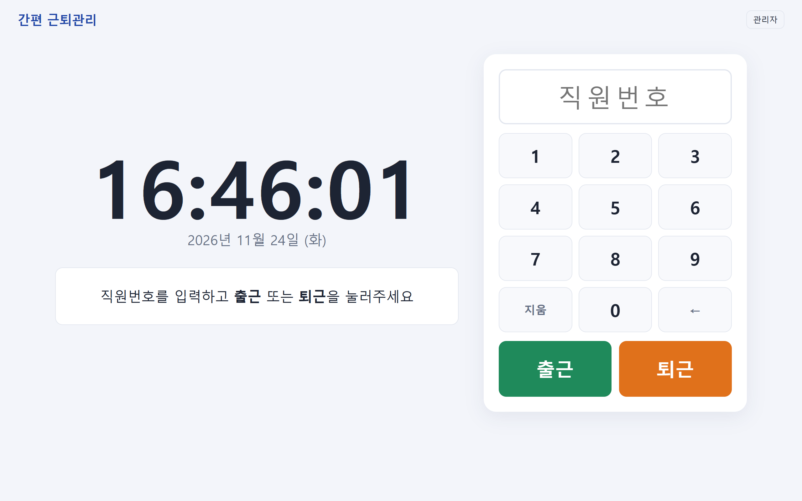

출퇴근부터 월급명세서까지,
설치 없이 바로 씁니다
직원은 카운터 PC에 직원번호만 입력하면 출퇴근이 기록됩니다. 사장님은 월말에 버튼 하나로 연장·야간·주휴수당까지 계산된 엑셀 명세서를 받습니다.

작은 가게에 필요한 것만 담았습니다
직원 2~20명 규모의 카페, 음식점, 편의점, 학원, 사무실을 생각하고 만들었습니다.
직원번호 출퇴근
번호를 입력하고 출근 또는 퇴근을 누르면 끝입니다. 지각이면 그 자리에서 알려줍니다.
시급제·월급제 모두
시급 직원은 일한 시간으로, 월급 직원은 정해진 월급으로 계산하고 출퇴근 기록만 관리합니다.
법정 수당 자동 계산
연장 1.5배, 야간 0.5배 가산, 휴일 1.5·2배가 기본값입니다. 배수는 사업장 사정에 맞게 바꿀 수 있습니다.
주휴수당·연차
주 15시간 이상 개근한 주에 주휴수당을 붙이고, 연차·월차 사용과 잔여일수를 관리합니다.
엑셀 월급명세서
급여대장과 직원별 명세서가 한 파일로 나옵니다. 지각·연장·결근은 빨간색으로 표시됩니다.
5인 미만 사업장 스위치
켜면 가산수당을 빼고 계산합니다. 근로기준법 적용 범위가 다른 작은 사업장을 위한 기능입니다.
시작은 세 단계
처음 설정에 5분이면 충분합니다.
관리자 비밀번호 만들기
처음 열면 관리자 비밀번호를 정합니다. 직원은 관리자 화면에 들어갈 수 없습니다.
직원 등록
직원번호, 이름, 직급, 시급 또는 월급, 근무요일과 출퇴근 시간을 입력합니다.
출퇴근 화면 띄워두기
카운터 PC에 출퇴근 화면을 켜두면 직원이 번호를 찍고, 월말에 명세서를 내려받습니다.
급여 계산 가이드
2026년 기준으로 정리했고, 바로 숫자를 넣어볼 수 있는 계산기가 들어 있습니다.
가게 운영 팁
자주 묻는 질문
정말 무료인가요?
네. 화면 아래쪽 광고로 운영비를 충당합니다. 기능 제한이나 직원 수 제한은 없습니다.
데이터는 어디에 저장되나요?
사용하는 PC의 브라우저 안(IndexedDB)에만 저장되고 서버로 보내지 않습니다. 그래서 브라우저 데이터를 지우거나 PC를 바꾸면 사라질 수 있으니 관리자 화면의 [백업]으로 파일을 꼭 저장해 두세요.
인터넷이 끊겨도 되나요?
한 번 열어 두면 오프라인에서도 출퇴근 기록과 계산이 됩니다. 브라우저 메뉴의 "앱 설치"를 누르면 바탕화면 아이콘으로도 쓸 수 있습니다.
4대보험이나 3.3%도 계산되나요?
직원마다 공제 방식을 고를 수 있습니다. 4대보험은 요율로 계산한 예상액이 자동으로 들어가고, 고지서 금액과 다르면 그 달만 고쳐 쓸 수 있습니다. 프리랜서는 3.3%(사업소득세 3% + 지방소득세 0.3%)가 자동 계산됩니다. 근로소득세는 부양가족 수에 따라 달라 직접 입력합니다.
여러 PC에서 같이 쓸 수 있나요?
데이터가 PC마다 따로 저장되므로 한 대의 PC에서 사용하는 것을 권장합니다. PC를 옮길 때는 백업 파일을 새 PC에서 복원하면 됩니다.